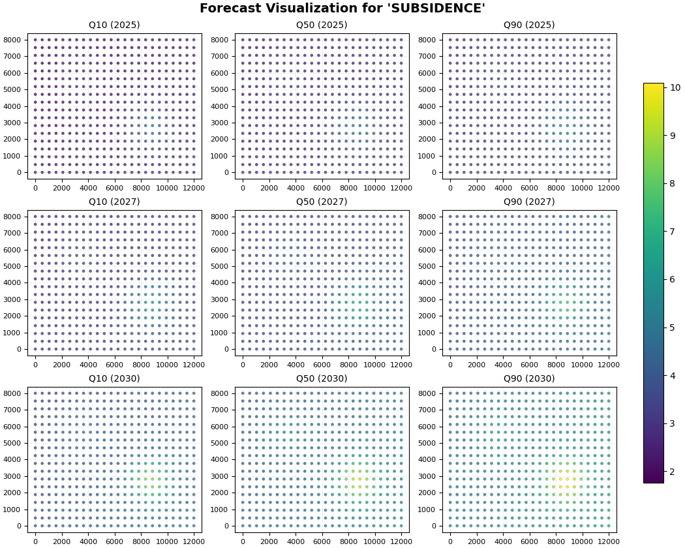

Note
Go to the end to download the full example code.
Future quantile maps with forecast_view#
This lesson teaches how to read future forecast maps
with geoprior.plot.forecast_view().
Why this figure matters#
A forecasting workflow usually produces more than one kind of question.
At first, a user may ask:
how does one sample evolve through the horizon?
do the intervals widen with lead time?
how close are predictions to held-out actuals?
That is the role of plot_forecasts.
But once the forecast table is already available, another question becomes central:
What does the forecast look like across space for each future year, and how does that picture change across quantiles?
That is the role of forecast_view.
The function is public in geoprior.plot and is designed to build
a grid of forecast maps organized by time slice and metric
(such as quantiles), while accepting both long-format and wide-format
forecast tables. It also supports filtering by selected years and
quantiles.
What this lesson teaches#
This page is a practical guide to the future-forecast map view.
We will:
create a compact synthetic future forecast table,
inspect the table structure,
render the real
forecast_viewfigure,learn how to read the map row-by-row and column-by-column,
connect the visual story to a small numerical summary.
The lesson uses a synthetic dataset so the page is fully executable during the documentation build.
What forecast_view expects#
The plotting backend accepts a forecast DataFrame and can detect
whether it is in long or wide format. In the common long-format case,
the table includes a time column such as coord_t, spatial
coordinates such as coord_x and coord_y, and prediction
columns such as subsidence_q10, subsidence_q50,
and subsidence_q90. It supports:
kind="pred_only"to display prediction maps only,kind="dual"to place actual and predicted panels side-by-side when actuals exist,view_quantilesto choose which quantiles to show,view_yearsto choose which years or time slices to show.
Imports#
We use the real public plotting function from GeoPrior.
from __future__ import annotations
import numpy as np
import pandas as pd
from geoprior.plot import forecast_view
Step 1 - Build a compact synthetic future forecast table#
We create a long-format table representing future forecasts at three years:
2025
2027
2030
Each row corresponds to one spatial sample at one future year. The prediction columns are:
subsidence_q10subsidence_q50subsidence_q90
This matches the contract expected by forecast_view for a
prediction-only future map layout.
rng = np.random.default_rng(17)
nx = 24
ny = 18
years = [2025, 2027, 2030]
xv = np.linspace(0.0, 12_000.0, nx)
yv = np.linspace(0.0, 8_000.0, ny)
X, Y = np.meshgrid(xv, yv)
x_flat = X.ravel()
y_flat = Y.ravel()
n_sites = x_flat.size
# normalized coordinates for constructing smooth synthetic fields
xn = (x_flat - x_flat.min()) / (x_flat.max() - x_flat.min())
yn = (y_flat - y_flat.min()) / (y_flat.max() - y_flat.min())
rows: list[dict[str, float | int]] = []
for year in years:
# stronger response at later years
year_level = {
2025: 1.00,
2027: 1.35,
2030: 1.80,
}[year]
# smooth spatial pattern with one main hotspot and one weaker ridge
hotspot = np.exp(
-(
((xn - 0.72) ** 2) / 0.018
+ ((yn - 0.34) ** 2) / 0.028
)
)
ridge = 0.55 * np.exp(
-(
((xn - 0.28) ** 2) / 0.020
+ ((yn - 0.72) ** 2) / 0.040
)
)
gradient = 0.40 * xn + 0.22 * (1.0 - yn)
q50 = (
2.2
+ 1.7 * gradient
+ 2.3 * hotspot
+ 1.2 * ridge
) * year_level
# modest spatially varying uncertainty, increasing with year
width = (
0.30
+ 0.10 * xn
+ 0.06 * hotspot
+ {2025: 0.12, 2027: 0.20, 2030: 0.32}[year]
)
q10 = q50 - width
q90 = q50 + width
# small perturbation to avoid a too-perfect synthetic field
q10 = q10 + rng.normal(0.0, 0.02, size=n_sites)
q50 = q50 + rng.normal(0.0, 0.02, size=n_sites)
q90 = q90 + rng.normal(0.0, 0.02, size=n_sites)
for idx in range(n_sites):
rows.append(
{
"sample_idx": idx,
"coord_t": year,
"coord_x": float(x_flat[idx]),
"coord_y": float(y_flat[idx]),
"subsidence_q10": float(q10[idx]),
"subsidence_q50": float(q50[idx]),
"subsidence_q90": float(q90[idx]),
}
)
future_df = pd.DataFrame(rows)
print("Future forecast table shape:", future_df.shape)
print("")
print(future_df.head(10).to_string(index=False))
Future forecast table shape: (1296, 7)
sample_idx coord_t coord_x coord_y subsidence_q10 subsidence_q50 subsidence_q90
0 2025 0.000000 0.0 2.176025 2.605535 2.970253
1 2025 521.739130 0.0 2.185986 2.613394 3.063258
2 2025 1043.478261 0.0 2.193636 2.616398 3.042095
3 2025 1565.217391 0.0 2.204448 2.652858 3.098266
4 2025 2086.956522 0.0 2.216978 2.695065 3.101286
5 2025 2608.695652 0.0 2.280461 2.748670 3.138636
6 2025 3130.434783 0.0 2.289095 2.769014 3.202659
7 2025 3652.173913 0.0 2.313083 2.787083 3.264380
8 2025 4173.913043 0.0 2.351317 2.803016 3.296720
9 2025 4695.652174 0.0 2.380010 2.842186 3.290490
Step 2 - Inspect the table before plotting#
A useful habit is to verify the data structure before opening the figure. In a future-forecast map page, the key checks are:
are the future years present?
do all quantile columns exist?
does the median field increase through time?
does interval width also increase through time?
We compute a small summary by year.
future_df["interval_width"] = (
future_df["subsidence_q90"] - future_df["subsidence_q10"]
)
summary = (
future_df.groupby("coord_t")
.agg(
n_pixels=("sample_idx", "size"),
q10_mean=("subsidence_q10", "mean"),
q50_mean=("subsidence_q50", "mean"),
q90_mean=("subsidence_q90", "mean"),
width_mean=("interval_width", "mean"),
q50_max=("subsidence_q50", "max"),
)
.reset_index()
.rename(columns={"coord_t": "year"})
)
print("")
print("Per-year summary")
print(summary.to_string(index=False))
Per-year summary
year n_pixels q10_mean q50_mean q90_mean width_mean q50_max
2025 432 2.451128 2.926328 3.401193 0.950066 5.182496
2027 432 3.396307 3.949711 4.503225 1.106918 6.971896
2030 432 4.593125 5.267372 5.941374 1.348250 9.325100
Step 3 - Render the real future quantile map figure#
We now call the real forecast_view backend.
Important choices:
kind="pred_only"because this page is about future forecasts, not holdout comparison;
value_prefixes=["subsidence"]because the columns are named
subsidence_q10,subsidence_q50,subsidence_q90;
view_quantiles=[0.1, 0.5, 0.9]so the page focuses on lower, median, and upper scenarios;
view_years=[2025, 2027, 2030]so rows follow a natural temporal story;
cbar="uniform"so all panels share the same color scale and can be compared visually without ambiguity.
The function is documented to arrange a grid by year and metric and to support quantile and year filtering in this way.
forecast_view(
forecast_df=future_df,
value_prefixes=["subsidence"],
kind="pred_only",
view_quantiles=[0.1, 0.5, 0.9],
view_years=[2025, 2027, 2030],
spatial_cols=("coord_x", "coord_y"),
time_col="coord_t",
cmap="viridis",
cbar="uniform",
axis_off=False,
show_grid=True,
grid_props={"linestyle": ":", "alpha": 0.45},
figsize=(10.5, 8.4),
show=True,
verbose=0,
)

Step 4 - Learn how to read the figure#
A future-quantile map should be read in a stable order.
First read the rows#
Each row corresponds to one future year.
The row-level question is:
how does the overall forecast field evolve through time?
In this synthetic example, later years should show a stronger response overall, especially in the high-risk hotspot.
Then read the columns#
Each prediction column corresponds to a different quantile:
q10: lower scenario,q50: central scenario,q90: upper scenario.
The column-level question is:
how much uncertainty surrounds the central forecast?
Comparing left-to-right within the same year tells you how wide the plausible range is for that future slice.
Why a uniform color bar matters#
Because we used cbar="uniform", all panels are on the same
scale. That makes cross-panel comparison honest:
a bright region in 2030 really is larger in magnitude than a mid-tone region in 2025,
apparent changes are not just artifacts of per-panel re-scaling.
Step 5 - Read the median forecast first#
In practice, the best reading strategy is to start with the median column.
Why?
Because q50 is the central scenario. It usually provides the
cleanest first interpretation of:
the main hotspot location,
the broad regional gradient,
whether intensification over time is localized or widespread.
In the synthetic figure, the median maps should show:
one dominant hotspot,
one weaker secondary elevated zone,
a general increase from 2025 to 2030.
Only after reading the median maps should you compare them with q10 and q90.
Step 6 - Use q10 and q90 to read uncertainty spatially#
The lower and upper quantile maps answer a different question.
They are not “competing forecasts” in the same sense as different models. Instead they describe the lower and upper parts of the predictive distribution.
What to look for:
Does the hotspot remain in the same place across q10, q50, q90?
Are uncertain regions concentrated in the same zones as the strongest predicted response?
Does uncertainty widen only locally or across the whole map?
In many practical workflows, a particularly important sign is when:
the hotspot exists even in q10, which suggests a robust high-risk signal;
the hotspot becomes much stronger in q90, which suggests substantial upside uncertainty in magnitude.
Step 7 - Add a small numerical summary for interpretation#
A lesson page becomes more useful when the visual story is paired with a simple numerical check.
Here we track:
the mean median forecast by year,
the mean interval width by year,
the fraction of pixels above a chosen median threshold.
This is not required by forecast_view itself, but it helps
explain the map progression quantitatively.
threshold = 6.0
risk_summary = (
future_df.groupby("coord_t")
.apply(
lambda g: pd.Series(
{
"mean_q50": g["subsidence_q50"].mean(),
"mean_width": (
g["subsidence_q90"] - g["subsidence_q10"]
).mean(),
"share_q50_above_6": (
g["subsidence_q50"] > threshold
).mean(),
}
)
)
.reset_index()
.rename(columns={"coord_t": "year"})
)
print("")
print("Interpretation summary")
print(risk_summary.to_string(index=False))
Interpretation summary
year mean_q50 mean_width share_q50_above_6
2025 2.926328 0.950066 0.000000
2027 3.949711 1.106918 0.030093
2030 5.267372 1.348250 0.120370
How to interpret this summary#
A good map lesson should connect the picture to the numbers.
In this synthetic example, the summary should show:
rising mean q50 through time,
widening mean interval width through time,
a growing share of pixels above the chosen threshold.
That confirms the same story already visible in the panels:
the forecast strengthens with year,
uncertainty also grows with year,
the high-response footprint expands over time.
Step 8 - Practical reading guide for real workflows#
When you use forecast_view on a real GeoPrior forecast table,
these are the most useful questions to ask:
Spatial consistency Does the forecast field look coherent, or does it look noisy and implausible?
Temporal progression Do the forecast maps evolve gradually from year to year, or are there abrupt jumps that need explanation?
Quantile separation Is there a meaningful difference between q10, q50, and q90?
Hotspot robustness Does the main hotspot appear already in q10, or only in q90?
Scale honesty Are the panels being compared on a common color scale?
Those five questions usually give a strong first reading of a future-forecast map grid before you move on to holdout comparison, coverage diagnostics, or publication-style figures.
Step 9 - Why this page comes after plot_forecasts#
This lesson is a natural second step in the forecasting gallery.
plot_forecaststeaches how to read forecast trajectories for individual samples or steps.forecast_viewteaches how to read year-by-year forecast fields in space.
So the two pages complement each other:
one is sample-centric,
the other is map-centric.
Together they give the user a strong first understanding of what the forecasting pipeline is producing.
Command-line and workflow note#
In practice, this kind of page is usually used after Stage-4 inference has already produced a forecast table with:
coord_t,coord_x,coord_y,and target quantile columns.
The recommended habit is:
inspect the table structure,
open a median-first map view,
compare lower/median/upper quantiles,
then move to eval-versus-future comparison if needed.
Total running time of the script: (0 minutes 2.071 seconds)